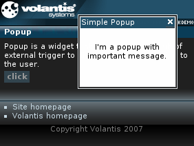

You have already seen the Popup widget used in the previous module. It can of course be used in any convenient context to inform the user of some event without disrupting the page that is being viewed. This example uses a different style that 'fades' the window display.

Please use this example as an exercise by creating a popup.xdime file in the client-app directory and completing the following code.
<?xml version="1.0" encoding="UTF-8"?>
<html xmlns="http://www.w3.org/2002/06/xhtml2"
xmlns:mcs="http://www.volantis.com/xmlns/2006/01/xdime/mcs"
xmlns:event="http://www.w3.org/2001/xml-events"
xmlns:template="http://www.volantis.com/xmlns/marlin-template"
xmlns:widget="http://www.volantis.com/xmlns/2006/05/widget">
<head>
<title>Popup Widget</title>
<link rel="mcs:theme" href="/themes/main.mthm"/>
<link rel="mcs:layout" href="/layouts/main.mlyt"/>
<style type="text/css" media="handheld,all">
widget|popup {
mcs-effect-style: fade;
mcs-effect-duration: 1s;
}
</style>
</head>
<body>
<template:apply href="templates/demo-main.xdtpl">
<template:binding name="title" value="Popup"/>
<template:binding name="content">
<template:complexValue>
Popup is a widget that appears as a result of external
trigger to display some information to the user.
<div class="buttons">
<widget:button action="myPopup#show">click</widget:button>
</div>
<widget:popup id="myPopup" class="rich-popup">
<div style="height: 100px; width: auto; padding: 1px;" class="widget">
<div style="text-align: right; white-space: nowrap; background-color: #23516a;">
<span style="float: left; color: #fff; padding: 1px">Simple Popup</span>
<widget:dismiss class="rich-dismiss">
<object src="/images/dismiss.mimg" border="0">close</object>
</widget:dismiss>
</div>
<div style="text-align: center; padding-top: 2em">
I'm a popup with important message.
</div>
</div>
</widget:popup>
</template:complexValue>
</template:binding>
</template:apply>
</body>
</html>| Name | Purpose |
|---|---|
| div | A section used to add extra structure to documents. Style sheets can be used to control the presentation. |
| object | A reference to a media resource. Object allows a variety of media resources to be placed on the rendered page. The resource may be specified as an image policy or a device depended mime type. Object also allows the control of media transcoding to ensure the resource will render on the requesting agent. See References to media for details. |
| span | Inline element used to set a style. |
| widget:button | A general purpose element, used by widgets which need a button-like control. |
| widget:dismiss | Provides a method for dismissing a widget. |
| widget:popup | The main element for a Popup widget. |
| Core attributes | Attributes that are common to XDIME 2 elements. |